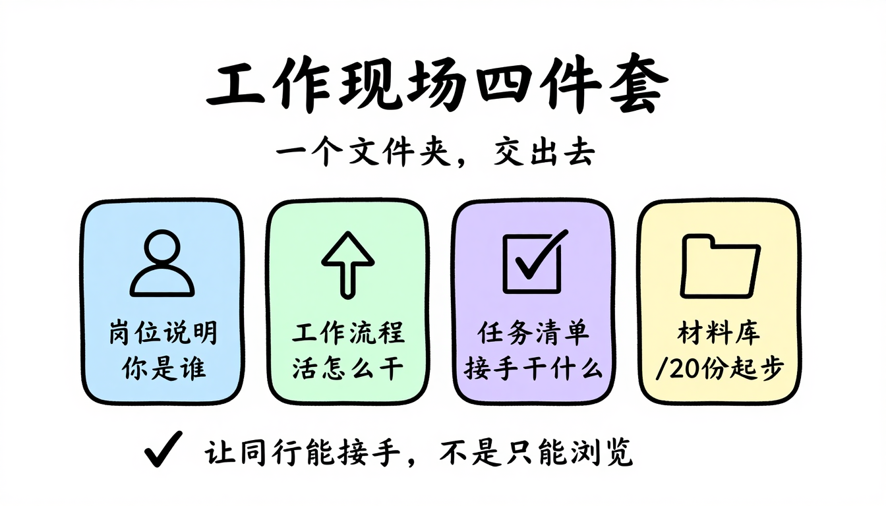
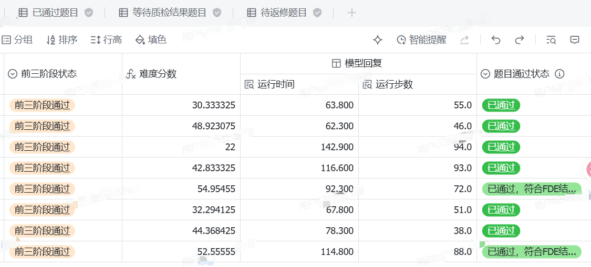
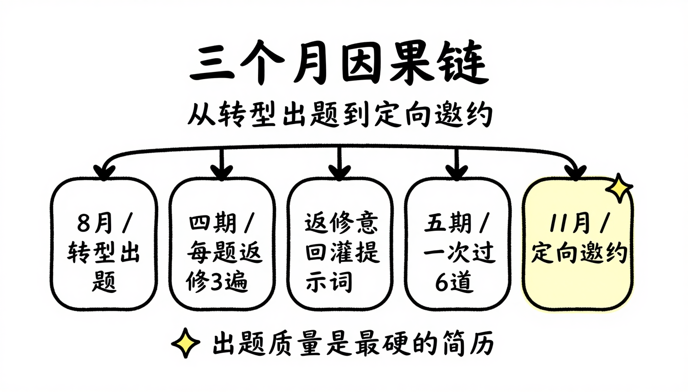
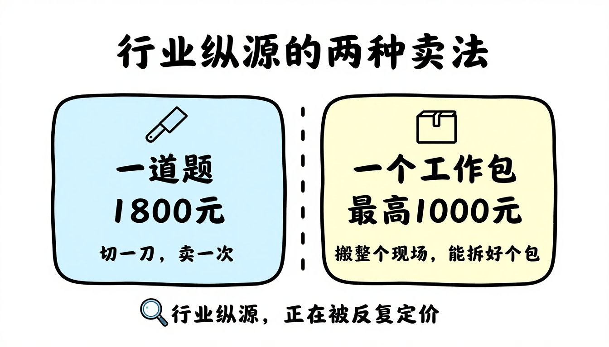

① 点右上角「复制到公众号」 → ② 微信公众号编辑器 Ctrl/⌘+V 粘贴。若图片未带入，改用 Ctrl/⌘+A 全选本页正文再复制；仍不行就用同目录「_含图_自包含.html」。
机会都得自己抢？
项目做完， 平台来敲门
这次连题都不用出
定向邀约 · 真实工作现场 · 行业纵深复利
AI启蒙学习 · 高经系列
📦 4 Parts + Conclusion
👉 滑动
PART 01
定向邀约的项目
字节开始收工作现场
PART 02
为什么找上我们
三个月因果链
PART 03
细节按下不表
等成绩写复盘
PART 04
被看见的路径
三步就能走
PART ///
现在能上车的三件事
补课 · 注册 · 进群
兄弟们还记得上一篇的结尾吗？9期收官，10期时间待定，我说窗口间歇期正好练手，等下一班开闸。
反转这周就来了。字节专家发来一个新项目的试标邀约：General Workspace。这个项目你在项目广场搜不到，不公开报名，字节定向点名受邀专家。
这次不是我们盯着项目广场找机会，是平台翻着成绩单找人。
起因说起来就一句话：五期那批题，第一轮质检一次通过6道，剩下2道也够到兜底线直接结算。出题质量入了字节老师的眼，新项目的门票就递了过来。
说实话，这条消息来的时候，10期还一点影子都没有。一扇门刚关上，另一扇门开了，时机就微妙在这。
那种感觉怎么说呢？就像你认真交了一次作业，老师没声不响把你调进了重点班。
今天这篇讲三件事：这个定向邀约的项目是什么、为什么找上我们、以及这条被看见的路径，你能不能走。
01
PART
定向邀约的项目：字节开始收工作现场
THE INVITATION · 不出题了
先把 General Workspace 翻译成人话：不出题了，把你真实干过的一摊工作，整个打包交出去。
官方要的东西叫 workspace，一个文件夹，四件套：
role.md · 你是谁
细到岗位，不能只写医生，要写到什么科室的医生
workflow.md · 活怎么干
从什么触发、用什么材料、做什么判断、产出交给谁
task.md · 接手的人能干什么
列具体任务，写清起点、交付和边界
environment · 材料库
不少于20份真实业务文件，外加软件和工具说明

— 工作现场四件套结构卡
任务说明里有一句官方定位，我原样贴给你：
请提交一组能够让同行接手工作的材料，而不是一组只能让人浏览的文件。
我的理解是养料升级。收题喂给模型的是难题，收工作现场喂的是真实工作的复杂性：多系统数据对不上、版本来回改、多方约束要平衡，这些恰恰是纯考题装不下的东西。
报酬按复杂度分三档：
| 等级 | 特征 | 报酬 |
|---|---|---|
| L1 基础复杂 | 跨文件线索≥3处，单任务动用≥10个文件 | 400元/个 |
| L2 中等复杂 | 多环节、跨来源核对、协作衔接 | 700元/个 |
| L3 高难深水区 | 完整复杂业务，多方约束、版本迭代、多工具协同 | 1000元/个 |
门槛看着不高：20份材料、3条工作流、3个任务。但官方把丑话写在前面：禁止编造工作流、禁止补历史记录、禁止为凑数塞无关文件。
这道门只认一样东西：你真的干过
02
PART
为什么找上我们：一条三个月的因果链
WHY US · 每一步都有出处
一个定向邀约的项目，凭什么落在自己头上？回头看，其实每一步都有出处。
8月中，高经出题一期启动，我们从众测转型出题，那三个月的账，第1篇《众测落袋16400、出题管线8万+》里摊开算过。
四期是中秋，卡点抢3道题，每道返修3遍才过。四期到五期之间，挨的每一条返修意见，我都回灌进了提示词，最密的时候6天迭代10个版本。
五期是国庆，媳妇的号拿着这套提示词，两个半钟出8道题，AI出完直接交，第一轮质检一次过6道、2道走兜底。那天的账折出时薪5000+，这是第2篇《国庆两个半钟折算1.6万》的战报。

— 五期第一轮质检：一次通过6题，2题达FDE标准
注意一个细节：出题的提示词和流程是我搭的，她拿过去换个行业字段，就能独立跑通。流水线是我的，行业纵深是她的，两头都硬，才有这个结果。
而高经出题有条硬要求：每一道题必须来自真实工作背景。她出的8道金融题，全是日常真实做过的业务。
题目质量过硬，等于向平台亮了底牌：这个人身后不只有8道题，是一整套真实工作现场。字节专家定向找过来，要的正是这个。
出题质量是最硬的简历
你交的每一道合格题，都在替你说一句话：这个人身后有货。

— 三个月因果链：从转型出题到定向邀约
03
PART
这次的细节，我先按下不表
TO BE CONTINUED · 等成绩写复盘
我们从五期的题目素材里，提炼了好几个不同业务方向的工作包，互不同质、材料不复制，已经交上去等验收了。
但具体是哪几个方向、怎么拆的、材料长什么样，这篇先不展开。
原因有两个。
一是项目还在试标验收期，本周内出质检结果。等成绩落定，我会写一篇完整复盘，从题目素材到工作包的全过程，包括每一步的判断依据。那是这个系列下阶段的养料。
二是复盘会先在群里讲，比文章早、比文章细。群是给真正走这条线的人准备的，先到先得。
交了几个包、能落袋多少，也是同一个逻辑：成绩没出来之前，一分钱都不算数，落袋了才好意思报数。
先说三个不涉及细节的判断，这是研究完任务说明和作业示例后的结论：
真实是唯一护城河。官方红线写得明明白白：编造工作流、补历史记录，直接毙。能交出合格包的门槛，就是你真的干过
材料要咬合，不要堆砌。文件多不加分，官方原话是禁止为凑数添加无关联孤立文件。好的包是一条工作链：触发、材料、判断、产物，环环扣得住
要让同行能接手。不是交一份只能看的档案，是交一份别人拿到手能接着干的现场
✦ 💡 小技巧
动手前先读一遍官方作业示例。role、workflow、task 各写成什么样、目录怎么摆，照着对齐，比自己从零猜快一半。
04
PART
这条被看见的路径，你能走
THE PATH · 三步就能走
试标的名单，普通账号现在进不去，定向邀约制。但这道门背后的逻辑是公开的。
路径就三步。
金融、法律、医疗、软件、教育，总得有一块你真正泡过的深水区。第1篇写过，出题的难点全部来自行业里新人最容易踩的非通识口径，没有纵深，难度分过不了机评。
这是提示词资产的活。第3篇《从注册到结算10步SOP》把十道关拆开讲过，哪关考什么、哪关最容易死，照着走能少交很多学费。
平台在给每个专家记成绩单，一次合格率、题目质量，都是标记。题出得越多越硬，被翻牌的概率越大。
把这几件事连起来看：8月转型出题，11月被定向邀约，中间隔3个月。平台的需求没有停，是在升维，从收难题到收工作现场。缺的从来不是出题的人，是有真实行业纵深、还能把纵深产品化的人。
一道题1800，是把行业经验切一刀卖一次；一个工作包最高1000，是把整个现场搬出来卖，而且一个现场能拆出好几个包。行业纵深这份资产，正在被这个平台反复定价。

— 行业纵深的两种卖法
那种感觉怎么说呢？就像地下室堆了多年的旧工具，突然有人上门按件收购，你才反应过来，这些年攒的不是杂物，是库存。
你手里有没有这份库存？第1篇的时薪账、第2篇的5000+战报，都是它变现的样子。现在，又多了一条新通道。
///
LAST
现在能上车的三件事
GET ON BOARD · 补课 · 注册 · 进群
想跟着这条线走的，按顺序做。
这个系列前五篇是一条完整故事线，没读过的按顺序翻：
第1篇 · 众测落袋16400、出题管线8万+
平台是什么、钱从哪来
第2篇 · 国庆两个半钟折算1.6万
16题一次过6题的实战复盘
第3篇 · 从注册到结算10步SOP
全流程，哪关最容易死
第4篇 · 9期窗口时效
怎么卡点抢机会
第5篇 · 9期收官，算力免费到11.30
上一篇
Xpert走我的邀请链接注册（走我邀请我有奖励，提前说清楚，邀请码在下面）。简历和学历认证是结算硬门槛，一般一天过审。10期待定正好把认证做完，开闸即首发。
公众号后台发「高经」两个字，加微备注高经，拉你进群。10期开闸消息、提示词更新解读、还有新项目的验收结果和复盘，群里第一时间讲。
— 我的Xpert邀请码
想直接上手的，两个档照旧：提示词包68，就是国庆那次16题省掉加固直接交、一次过6题的底牌；陪跑299（原价699，前200名），1对1带你把第一道题从领题跑到提交。
照例劝退三秒：没行业纵深的、不想迭代提示词的、时间碎成渣的，别来。
最后留个问题给你：如果明天字节定向邀约你，要你把日常工作打包成一份交得出去的现场，你拿得出什么？
评论区聊聊，你的答案是现成的，还是得从头攒。
我是艾启蒙，用AI陪伴成长，用技术创造价值！
既然看到这里了，如果觉得有用，随手点个赞、在看、转发三连吧。
THANKS FOR READING
⭐ 星标关注「AI启蒙学习」 · 这个系列的战报，会一直更下去